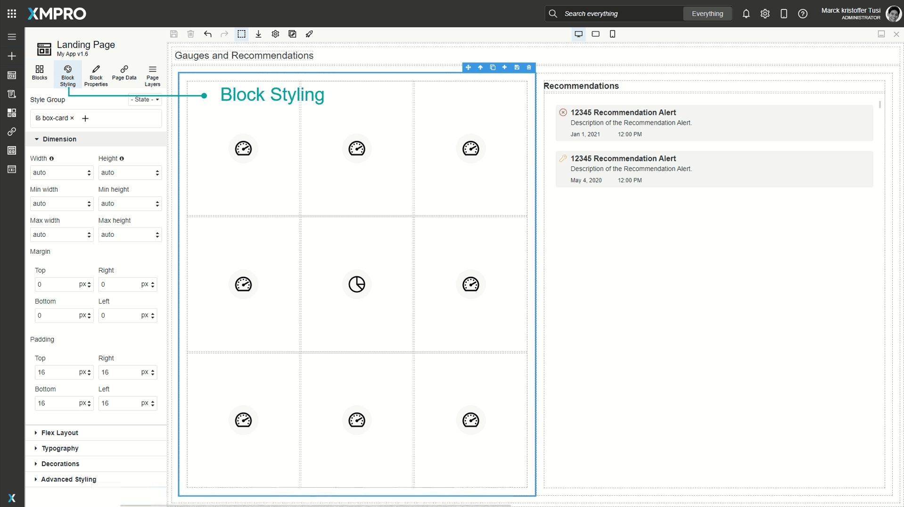
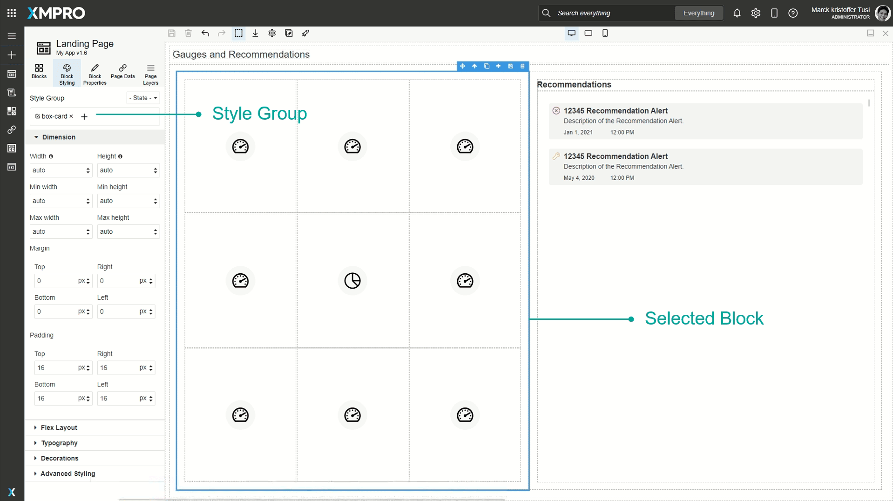
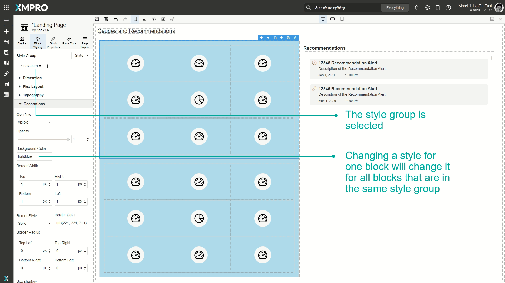
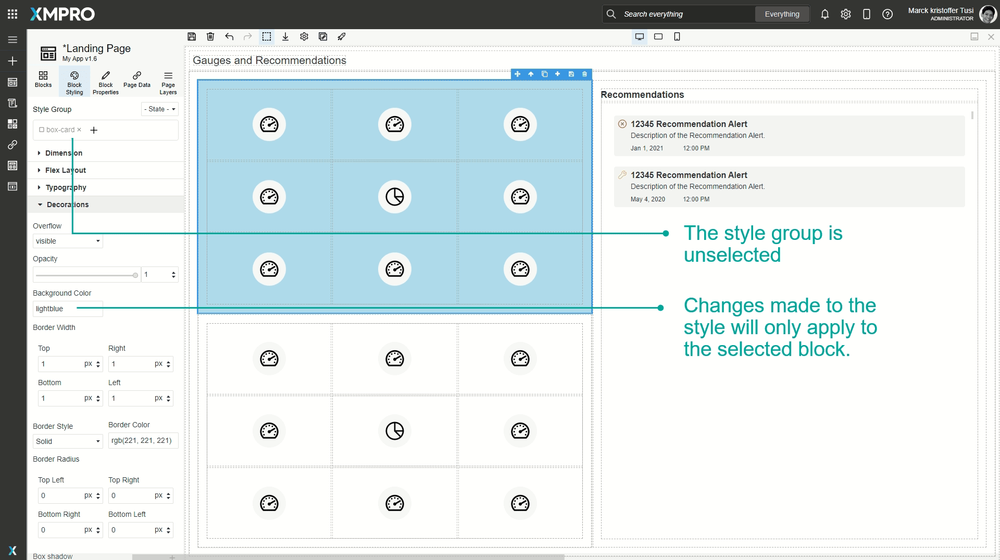
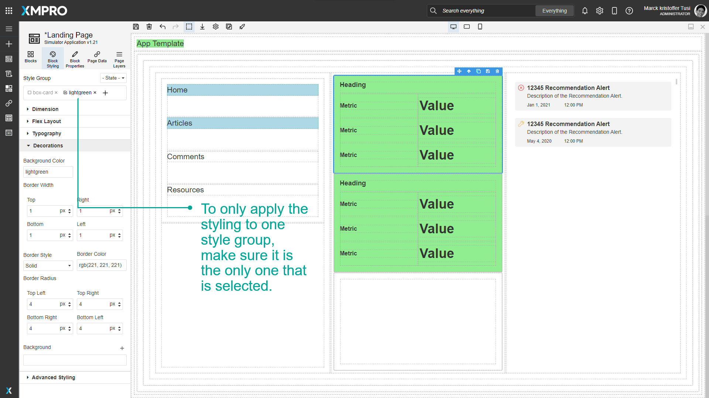
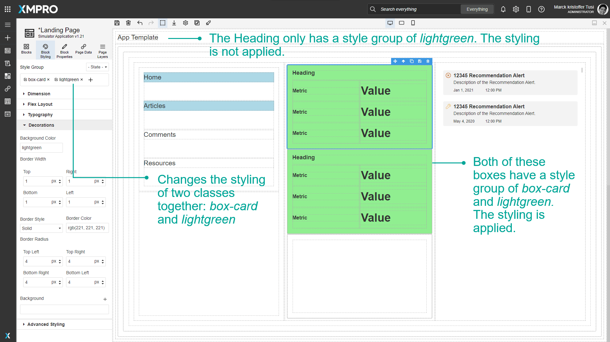

Block Styling
When a Block is selected, it can be styled under the 'Block Styling' tab in the Toolbox. Styling can include changing the text color, background color, borders, typography, or dimensions of the Block. This allows you to customize the look and feel of the application based on themes or color palettes for your specific organization. You can also customize the style of certain actions such as hovering over or clicking a button, or changing the style for every second Block.
Style Groups
A Block can also be assigned to a style group where a common set of styles can be configured and applied to multiple Blocks at the same time.

Certain Blocks such as content cards or cards that are dragged onto the canvas already have pre-existing style groups, such as grids. These will show up under the 'Style Group'.

If you have a Style Group selected and make changes to any of the styling configurations, the styling will automatically be applied to all the Blocks that are also in that style group. For example, if two grids have a style group called box-card, and you select only one of the grids and change the background to light blue, that change will also be applied to the other grid.

To make changes without affecting other blocks, deselect the style group and make the changes.

You can add multiple style groups at a time. If a Block has multiple style groups and you only want to apply styling to one of them, make sure only that style group is selected when configuring new styles.

If multiple style groups are selected and the styling is changed, the styling will be applied to both of them together. For example, if you have two style groups, box-card, and lightgreen, and you apply styling to both of them, that styling will only be applied to Blocks that have both box-card and lightgreen style groups.

Devices
Styles can also be configured for different devices. See the Devices article for more details on devices.
Style Sections
Dimension
| Style | CSS Property |
|---|---|
| Width | width sets the width of an element. |
| Height | height sets the height of an element. |
| Min Width | min-width defines the minimum width of an element. |
| Min Height | min-height defines the minimum height of an element. |
| Max Width | max-width defines the maximum width of an element. |
| Max Height | max-height defines the maximum height of an element. |
| Margin | |
| Padding |
Note
When not using 'auto', the supported css units for the dimension properties are:
- fixed: px
- relative: % and vh/vw
Flex Layout
Note
Recommended reading: Flex and How to Use Flex.
| Style | CSS Property |
|---|---|
| Direction | flex-direction specifies the direction of the flexible items: Row, Row reverse, Column, or Column reverse. |
| Justify | justify-content aligns the flexible container's items when the items do not use all available space on the main-axis (horizontally): Start, End, Space between, Space around, or Centre. |
| Align Items | align-items specifies the default alignment for items inside the flexible container: Start, End, Bottom, Stretch, Centre. |
| Wrap | flex-wrap specifies whether the flexible items should wrap or not: No wrap, Wrap, Wrap reverse. |
| Grow | flex-grow is an integer that specifies how much the item will grow relative to the rest of the flexible items inside the same container. |
| Align Self | align-self specifies the alignment for the selected item inside the flexible container: Auto, Start, End, Bottom, Stretch, Centre. |
Typography
| Style | CSS Property |
|---|---|
| Font | font-family specifies the font for an element: Arial, Arial Black, Brush Script MT, Comic Sans MS, Courier New, Georgia, Helvetica, Impact, Lucida Sans Unicode, Tahoma, Times New Roman, Trebuchet MS, Verdana |
| Font size | font-size sets the size of a font. Either string or an integer along with a fixed (px) or relative (%, em, rem, vh, or vw) css unit. |
| Font Weight | font-weight sets how thick or thin characters in text should be displayed: Thin, Extra-Light, Light, Normal, Medium, Semi-Bold, Bold, Extra-Bold, or Ultra-Bold. |
| Font Style | font-style specifies the font style for a text. Normal, italic, or oblique. |
| Line Height | line-height specifies the height of a line using a fixed (px) or relative (%, em, rem, vw, or vh) css unit. |
| Font Color | color specifies the color of text by name, RGB, or RGBA. |
| Text Align | text-align specifies the horizontal alignment of text in an element: Left (default), Center, Right, or Justify. |
| Text Decoration | text-decoration specifies the decoration added to the text: Underline, Strikethrough, or None (default). |
| Word Spacing | word-spacing increases or decreases the space in pixels between words in a text (default normal). |
| Letter Spacing |
Either string or an integer along with a fixed (px) or relative (%, em, or rem) css unit. |
| Wrap Text | Sets whether text should be wrapped: Yes or No. |
| Wrap Text At | The options are Spaces, Capitals and Symbols, and Anywhere. |
Decorations
| Style | CSS Property |
|---|---|
| Background Color |
The background of an element is the total size of the element, including padding and border (but not the margin). |
| Border Width | |
| Border Style | border-style sets the style of an element's four borders: Solid, Dotted, Dashed, Double, Groove, Ridge, Inset, Outset, or None. |
| Border Color | border-color sets the color of an element's four borders by name, RGB, or RGBA. |
| Border Radius | Add rounded borders to the corners of elements: |
| Background |
|
Advanced Styling
These styling options are rarely needed, but they provide additional flexibility for expert users.
Advanced position and displayed styling
| Style | CSS Property |
|---|---|
| Display | display specifies the type of rendering box of an element: block, inline, inline-block, flex (default), or none. |
| Position | position specifies the type of positioning used for an element: static (default), relative, absolute, or fixed. |
| Top* | top sets the vertical position of a positioned element (default auto). |
| Right* | right sets the horizontal position of a positioned element (default auto). |
| Left* | left sets the horizontal position of a positioned element (default auto). |
| Bottom* | bottom sets the vertical position of a positioned element (default auto). |
Extra advanced styling
| Style | CSS Property |
|---|---|
| Transition |
|
| Perspective | perspective defines how far the object is away from the user. A lower value will result in a more intensive 3D effect than a higher value. |
| Z Index | z-index specifies the stack order of a positioned element. |
| Transform | Apply 3D mouseover effects to transformable elements:
|
| Pointer Events | pointer-events defines whether or not an element reacts to pointer events: All (default) or None. |
| Cursor |
Auto (default), Allowed, Help, None, Pointer, Progress, Wait, Zoom In, or Zoom Out. |
Advanced flex layout styling
Typography advanced styling
| Style | CSS Property |
|---|---|
| Text Shadow | text-shadow adds one or more layers to the text, each comprising an X position, Y position, and Blur (px or %) - as well as a Color (name, RGB, or RGBA). |
Advanced decoration styling
| Style | CSS Property |
|---|---|
| Overflow | overflow sets the desired behavior when content does not fit in the parent element box (overflows) in the horizontal and/or vertical direction: visible (default), hidden, scroll, or auto. |
| Opacity | opacity sets the transparency of an element, where 1 is not at all transparent, 0.5 is 50% see-through, and 0 is completely transparent. |
| Box Shadow | box-shadow adds one or more shadow layers to an element, each comprising an X position, Y position, Blur, and Spread (px or %) - as well as a Color (name, RGB, or RGBA) and Shadow Type (Outside, Inside). |
Further Reading
Last modified: August 05, 2025